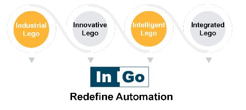

-
關於InGo
速創科技致力於建構與維護工業樂高(InGo)的工業設備平台，此平台已經整合各式不同的裝置與設備，包含機器手臂、軸控設備、相機、環境感測器…等，舉凡只要含有電訊號的元件、裝置、設備與InGo進行系統連結後，即可輕鬆的進行操控。

-
經營故事
曾經與中科院、台北植物園合作過的執行長 James，在案子合作過程時觀察，長期以來各種產業的自動化最困難地方，在於需要把很多不同的元件和設備整合在一起，為了讓設備與設備間快速連結，打造心中理想的戰情室，於是找尋一群志同道合的夥伴，打造一個整合自動化的開發平台，也就是InGo智能工廠。
-
願景
速創科技是自動化設備整合專家，希望透過科技和創新，重新定義自動化。
- 